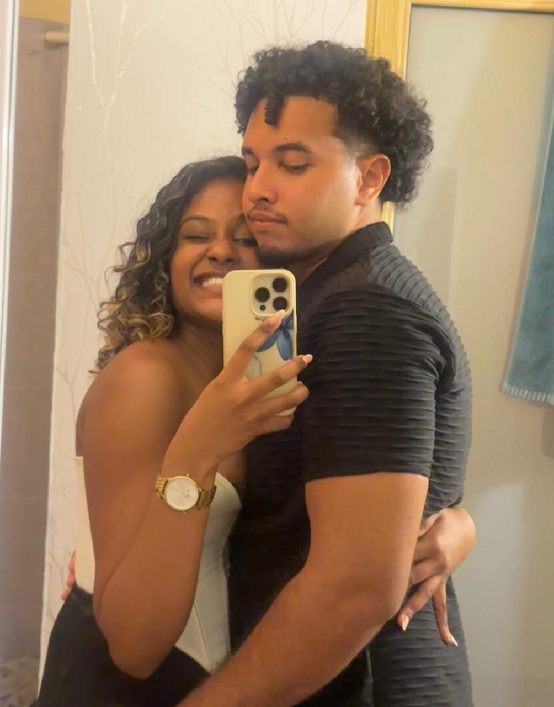
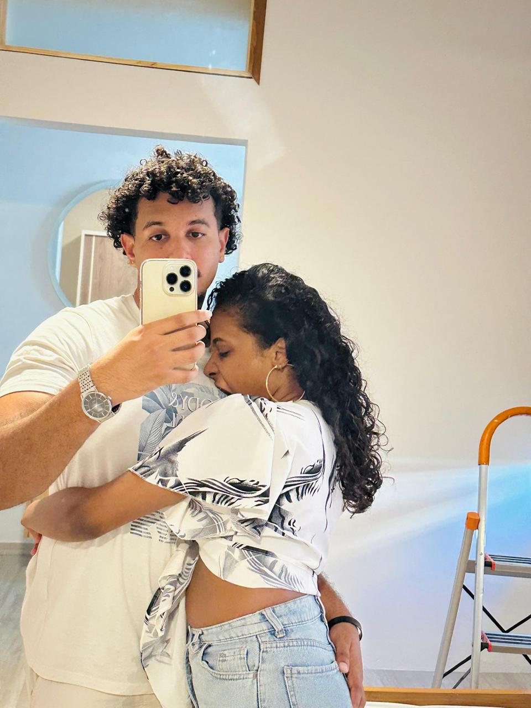
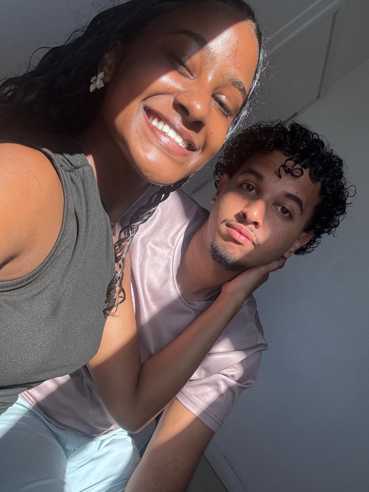
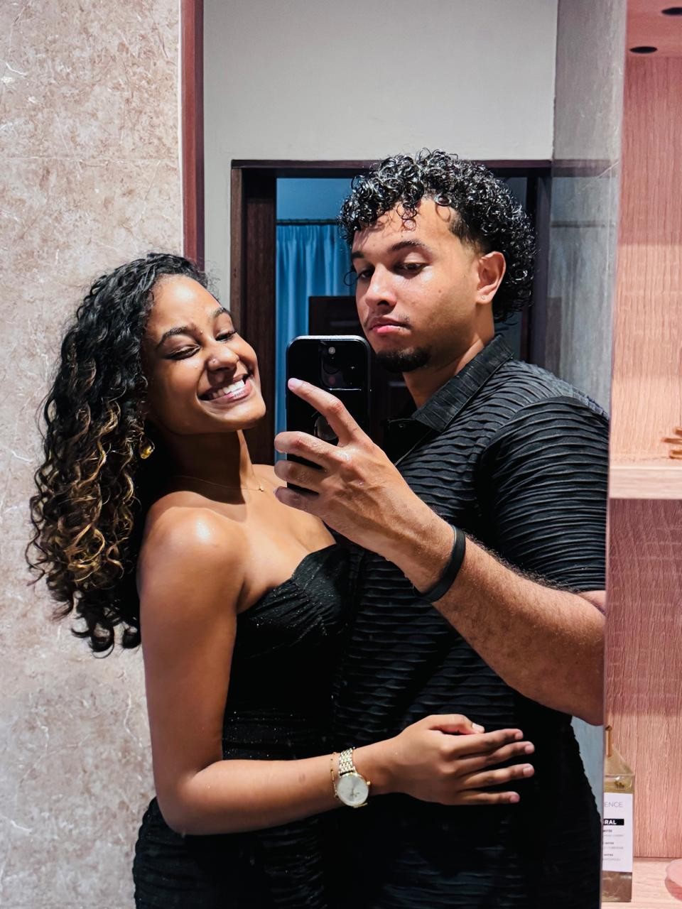

Notre Histoire
Une histoire qui mérite d'être racontée...
Fais glisser pour commencer →
La première rencontre
Il était une fois un beau jeune homme qui rencontra une très belle jeune femme. Il tomba amoureux d’elle au premier regard.
Ils commencèrent à se parler, de plus en plus, et petit à petit, les deux tombèrent amoureux l’un de l’autre.
Ils s’étaient rencontrés dans un hôtel, où ils avaient joué et passé du temps ensemble. Ils étaient ensuite partis dîner et s’étaient amusés toute une soirée.
Notre premier souvenir 🎬
Petit à petit...
Au fil du temps, le feeling passait de mieux en mieux entre eux.
L’homme adorait voir le sourire de la femme. Et plus elle souriait, plus il tombait amoureux d’elle.
Au départ, il pensait que ce ne serait qu’une histoire d’un jour, une simple journée parmi tant d’autres.
Mais il était loin de s’imaginer que cette journée deviendrait l’un des meilleurs moments de sa vie, et surtout, qu’elle deviendrait une personne qui resterait dans sa vie.
Un souvenir en vidéo 🎬
Un nouveau chapitre
Ensuite, ils échangèrent leur premier baiser à l’hôtel. Après cela, ils continuèrent à se parler sur les réseaux sociaux.
Ils continuèrent également à se voir, et pour le jeune homme, pouvoir admirer son sourire et ses yeux remplis d’amour le comblait de bonheur.
Pour lui, cette femme était parfaite. Elle avait des yeux incroyables et des cheveux tellement beaux qu’on aurait dit des cheveux d’ange.
Des moments à garder pour toujours ❤️




Une personne exceptionnelle
Son sourire aurait pu redonner la vue à un aveugle, et toute sa personnalité faisait d’elle une personne exceptionnelle.
Il est tellement heureux de l’avoir rencontrée, de la connaître et de l’aimer un peu plus chaque jour.
Il est heureux de pouvoir passer des moments inoubliables avec elle et de profiter de cette magnifique aventure à deux.
Bon anniversaire, mon amour.
Que cette histoire continue encore et encore, et que chaque nouveau chapitre soit plus beau que le précédent.
Je t’aime. ❤️